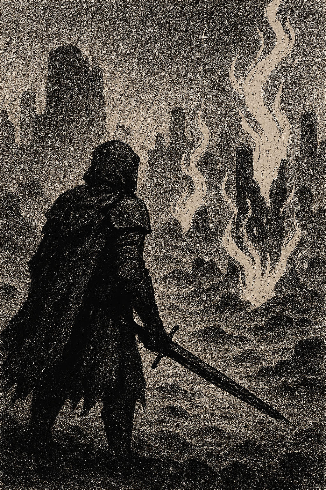
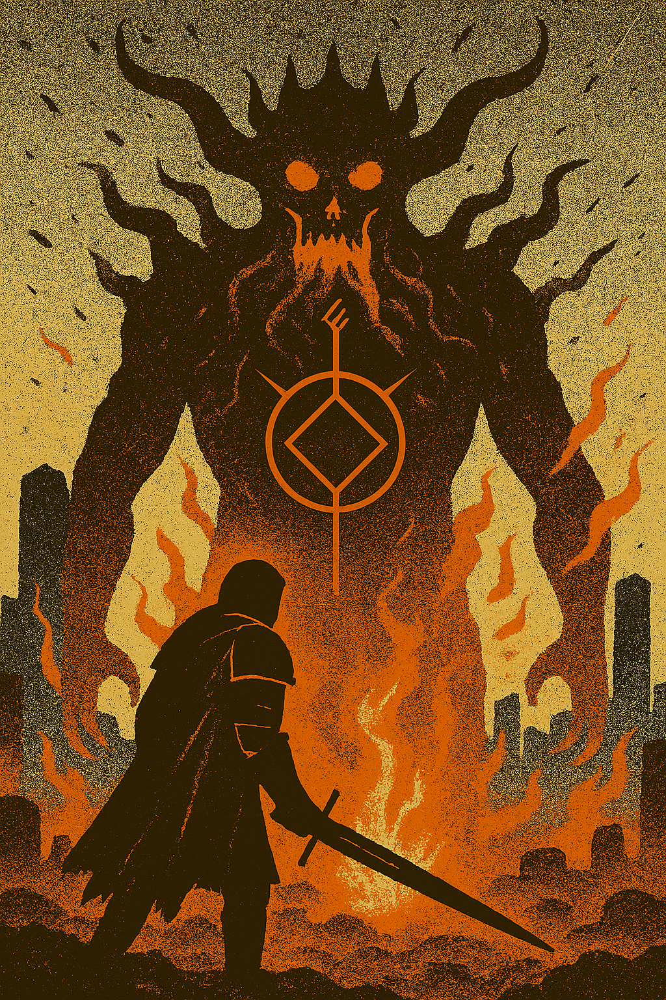

Ash & Oath
In a world blanketed by falling ash and fractured memory, you are a Vowkeeper—a wanderer bound to ancient oaths carved into bone and stone. Magic here is not cast, but kept. Every spell is a promise. Every promise has a price. Ash & Oath is a tactical RPG steeped in ritual and consequence. Navigate a decaying realm where forgotten gods whisper through ruins, and broken covenants twist the land itself. Will you honor the vows of old—or forge new ones in the embers of betrayal?
- Oathbinding System: Shape your abilities and alliances by forging, breaking, or rewriting magical vows.
- Strategic Combat: Turn-based battles with terrain manipulation, vow-triggered effects, and enemy factions tied to ancient covenants
- Branching Narrative: Your choices ripple through the world—altering relationships, environments, and the fate of entire regions.
- Atmospheric World: Explore ash-covered temples, whispering forests, and ember-lit sanctuaries rendered in painterly detail.
Embrace the Oath
You carry the weight of forgotten oaths. The ash remembers. And the gods are listening.

